← 返回阅读库 · 原论文目录
论文讲解阅读文档 · 论文精读 · v248
提速32倍！何恺明语言模型处女作！ELF
视频时长 00:11:38；讲解文字 3,696 字符；提取讲解画面 235 张。按视频原顺序阅读，每段文字保留时间戳。
文字来自整段视频的自动语音转写，按自然停顿分段，并与 PPT / 论文页面 / 演示画面对齐。未将讲解压缩为摘要；术语、数字和口述公式请结合画面及原论文核对。 阅读稿已校正规范部分明确术语误识别；原始逐字稿和每处修改记录另行保留。
讲解画面为源视频截图（640×360），不是可编辑 PPT 文件。全片按每秒 2 帧扫描内容变化，逐步展开页保留；连续动画保留代表画面。清晰度受源视频限制。
下载完整资料包 · 含离线 HTML、PDF、Word、全部 PPT 画面和字幕。
原论文与材料
ELF: Embedded Language Flows · 下载完整 PDF（39 页）
按时间阅读
00:00:00–00:00:04 · 画面 001
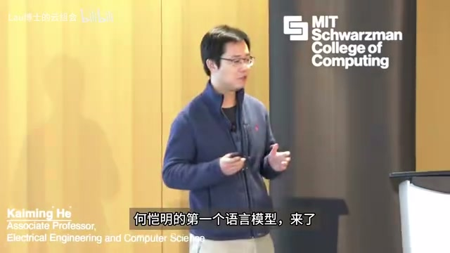
00:00:00–00:00:04 · 画面 001何恺明的第一个语言模型来了。这位 ResNet 之父的新论文 ELF 一上来就质疑了 GPT 走了十年的自回归老路，参数仅一亿出头，数据只需别人的十分之一，用 32 步就干完对手 1024 步的活，大家好
00:00:04–00:00:05 · 画面 002
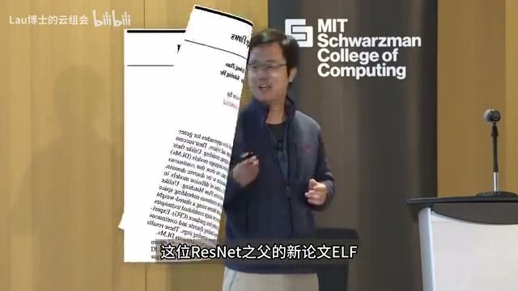
00:00:04–00:00:05 · 画面 00200:00:05–00:00:06 · 画面 003
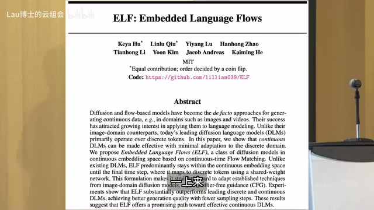
00:00:05–00:00:06 · 画面 00300:00:06–00:00:10 · 画面 004
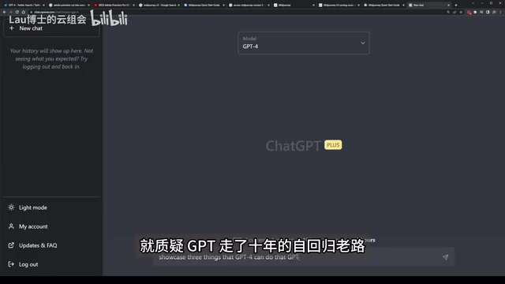
00:00:06–00:00:10 · 画面 00400:00:10–00:00:14 · 画面 005
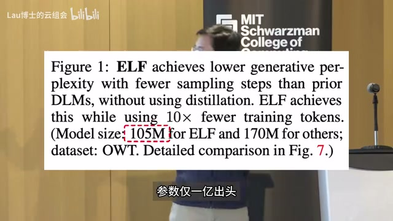
00:00:10–00:00:14 · 画面 00500:00:14–00:00:18 · 画面 006
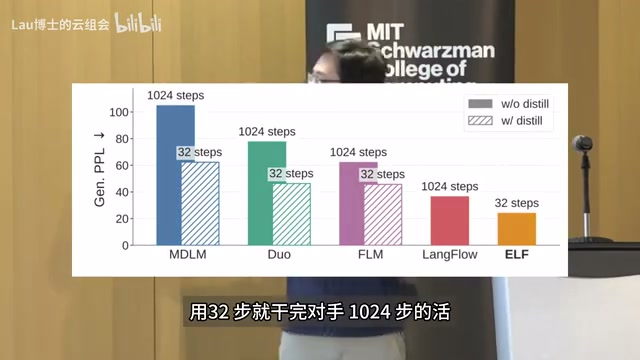
00:00:14–00:00:18 · 画面 006欢迎来到云组会，上期视频我们一起聊了何恺明的 Drifting，那本期六博士说到做到，和大家一起拆解何恺明的语言模型处理作，看大佬如何用视觉中的扩散方法重构语言模型，云组会论文精读系列，嵌入式语言流 ELF
00:00:18–00:00:22 · 画面 007
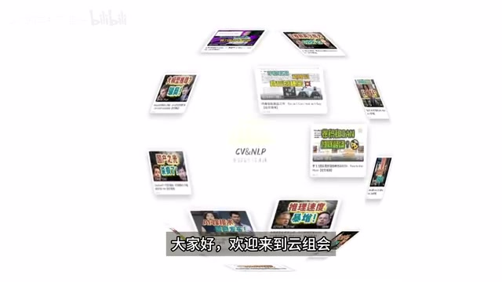
00:00:18–00:00:22 · 画面 00700:00:22–00:00:25 · 画面 008
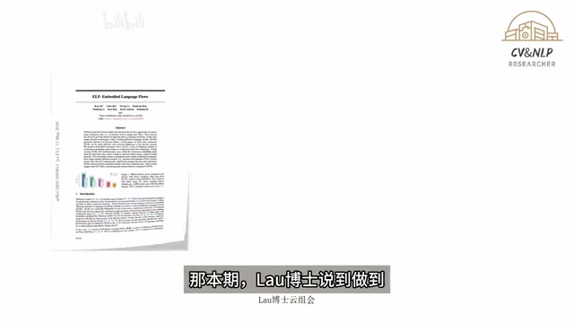
00:00:22–00:00:25 · 画面 00800:00:25–00:00:29 · 画面 009
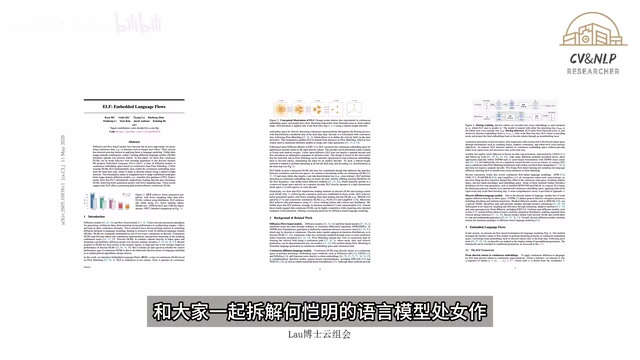
00:00:25–00:00:29 · 画面 00900:00:29–00:00:33 · 画面 010
00:00:29–00:00:33 · 画面 01000:00:33–00:00:34 · 画面 011
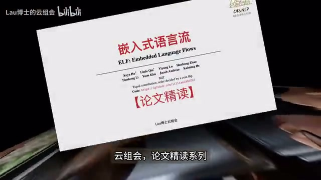
00:00:33–00:00:34 · 画面 01100:00:34–00:00:38 · 画面 012
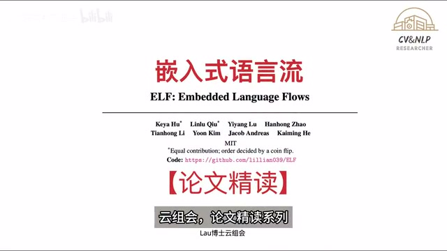
00:00:34–00:00:38 · 画面 01200:00:38–00:00:42 · 画面 013
00:00:38–00:00:42 · 画面 01300:00:42–00:00:43 · 画面 014
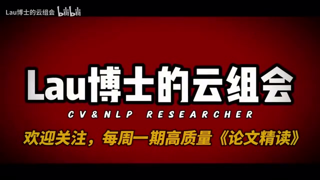
00:00:42–00:00:43 · 画面 01400:00:43–00:00:44 · 画面 015
00:00:43–00:00:44 · 画面 01500:00:44–00:00:46 · 画面 016
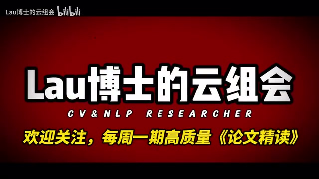
00:00:44–00:00:46 · 画面 01600:00:46–00:00:48 · 画面 017
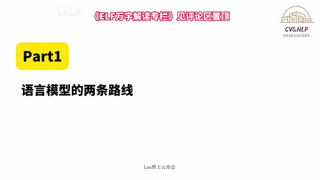
00:00:46–00:00:48 · 画面 017来了。同学们要理解 ELF 做了什么，我们得先花两分钟把语言生成的几条路线理清楚。第一条自回归，GPT 走的就是这条，看前面写了什么预测下一个词，接上再预测下一个，从左到右一个一个来，这套范式统治了语言模型很多年，但它的毛病也相当的明显，落笔不能改，写错了回不了头，也没法先搭好框架再填内容。第二条路扩散，先把整段
00:00:48–00:00:54 · 画面 018
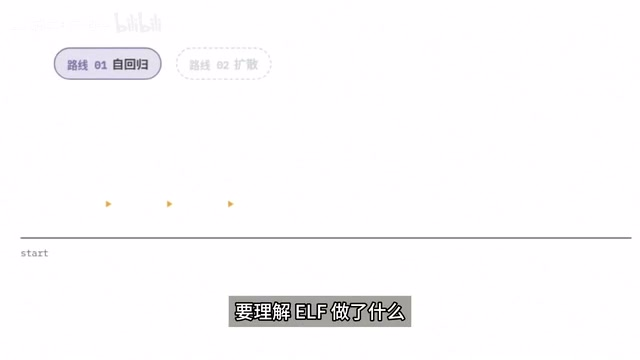
00:00:48–00:00:54 · 画面 01800:00:54–00:00:55 · 画面 019
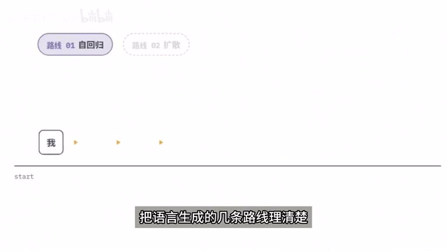
00:00:54–00:00:55 · 画面 01900:00:55–00:00:56 · 画面 020
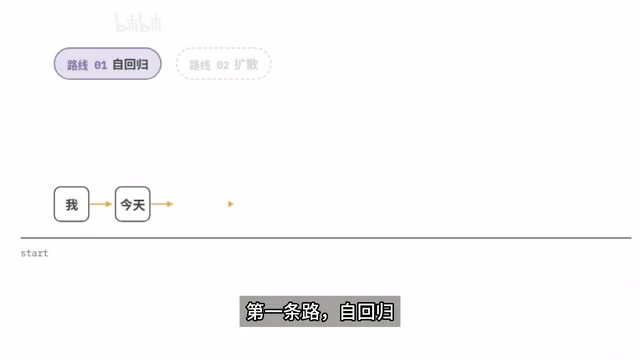
00:00:55–00:00:56 · 画面 02000:00:56–00:00:58 · 画面 021
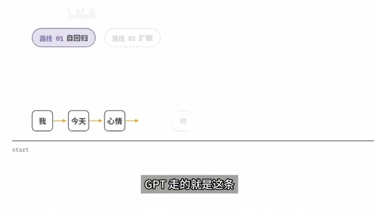
00:00:56–00:00:58 · 画面 02100:00:58–00:01:03 · 画面 022
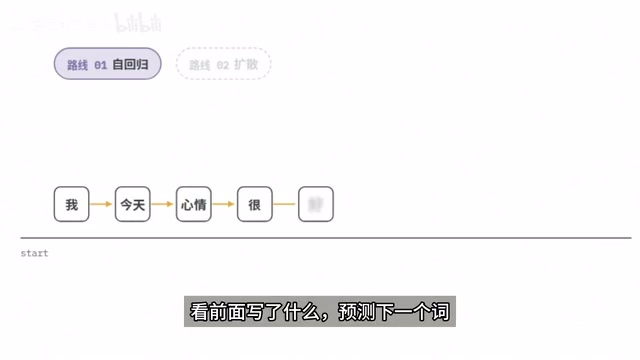
00:00:58–00:01:03 · 画面 02200:01:03–00:01:06 · 画面 023
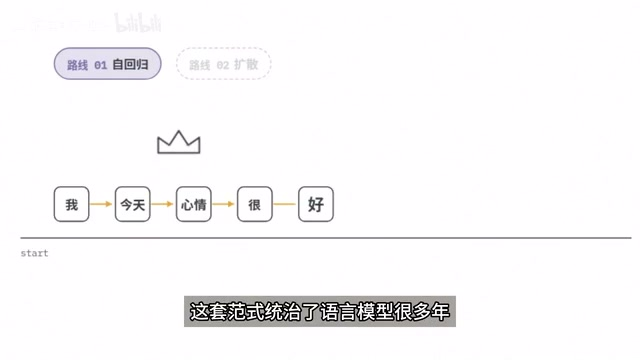
00:01:03–00:01:06 · 画面 02300:01:06–00:01:11 · 画面 024
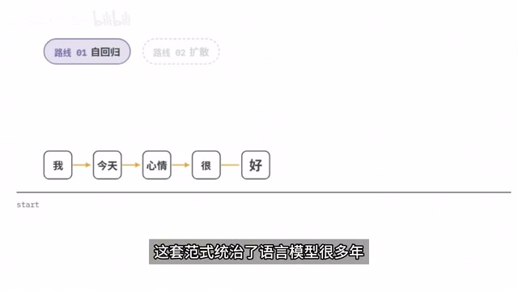
00:01:06–00:01:11 · 画面 02400:01:11–00:01:12 · 画面 025
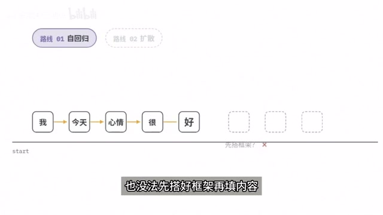
00:01:11–00:01:12 · 画面 02500:01:12–00:01:15 · 画面 026
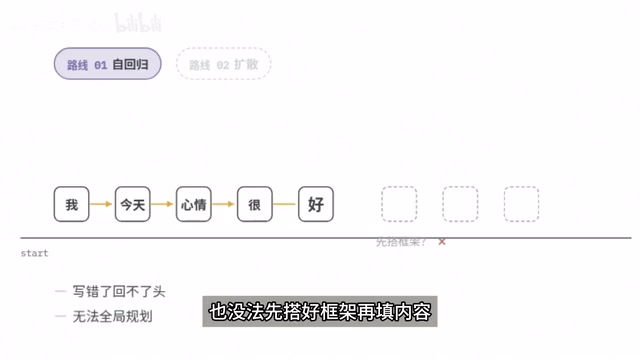
00:01:12–00:01:15 · 画面 02600:01:15–00:01:20 · 画面 027
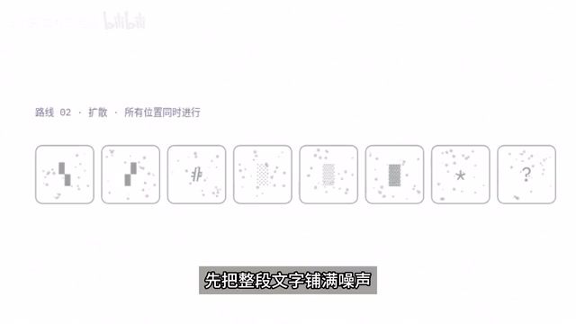
00:01:15–00:01:20 · 画面 027文字铺满噪声，然后一轮一轮的整体修改，像改草稿一样，每一轮都是全文重写，所有位置同时进行，理论上自由得多，有点像电影《降临》里面的外星语言，没有从前往后的顺序，而是写下第一笔之前就已经知道整篇内容将如何布局。同时扩散内部又分两派
00:01:20–00:01:24 · 画面 028
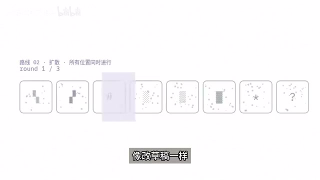
00:01:20–00:01:24 · 画面 02800:01:24–00:01:28 · 画面 029
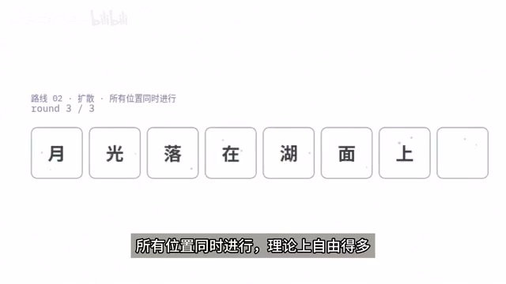
00:01:24–00:01:28 · 画面 02900:01:28–00:01:32 · 画面 030
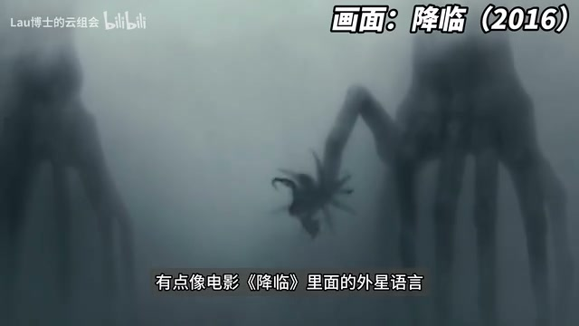
00:01:28–00:01:32 · 画面 03000:01:32–00:01:36 · 画面 031
00:01:32–00:01:36 · 画面 03100:01:36–00:01:38 · 画面 032
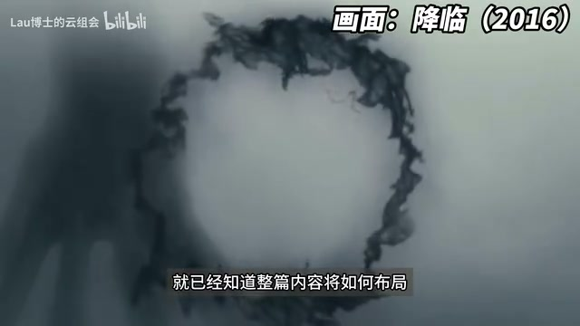
00:01:36–00:01:38 · 画面 03200:01:38–00:01:40 · 画面 033
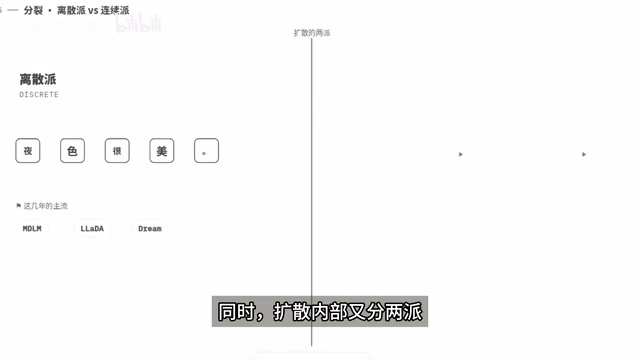
00:01:38–00:01:40 · 画面 03300:01:40–00:01:41 · 画面 034
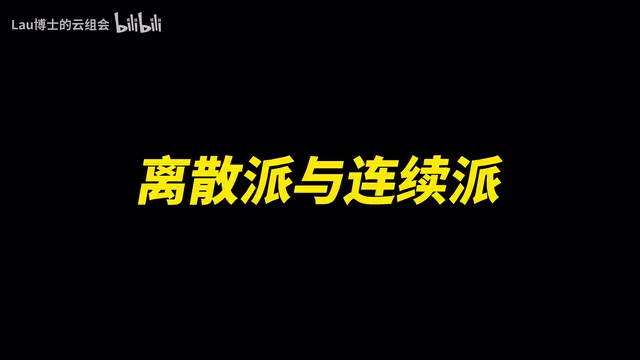
00:01:40–00:01:41 · 画面 034离散派直接在词的层面操作，把词给遮住，再拆回来。MDLM 、LLaDA 、DREAM 都是代表，也是这几年的主流。连续派则先把词翻译成向量，在向量空间里完成生成，最后再翻译回词。这里重点说下连续派，他的想法其实很有意思。我们知道词和词之间是隔绝的，猫和狗在词表里只是两个编号。
00:01:41–00:01:43 · 画面 035
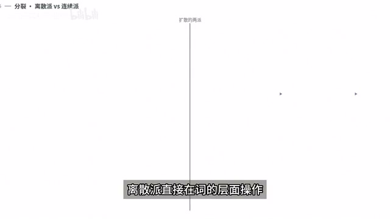
00:01:41–00:01:43 · 画面 03500:01:43–00:01:47 · 画面 036
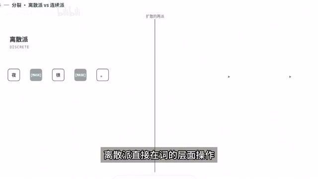
00:01:43–00:01:47 · 画面 03600:01:47–00:01:51 · 画面 037
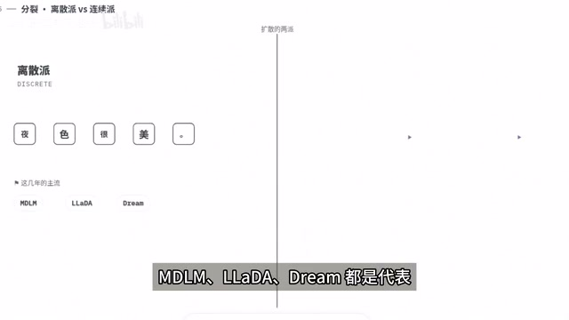
00:01:47–00:01:51 · 画面 03700:01:51–00:01:52 · 画面 038
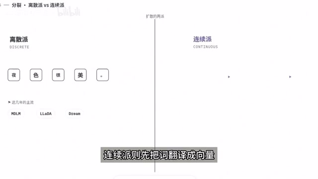
00:01:51–00:01:52 · 画面 03800:01:52–00:01:53 · 画面 039
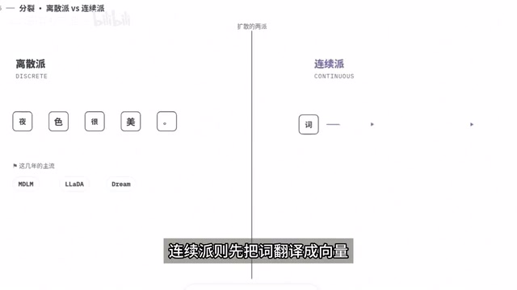
00:01:52–00:01:53 · 画面 03900:01:53–00:01:55 · 画面 040
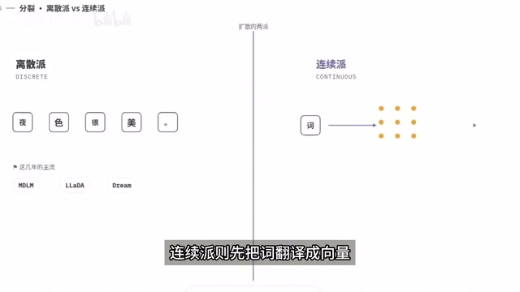
00:01:53–00:01:55 · 画面 04000:01:55–00:01:56 · 画面 041
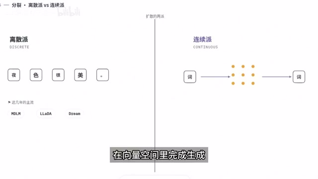
00:01:55–00:01:56 · 画面 04100:01:56–00:02:00 · 画面 042
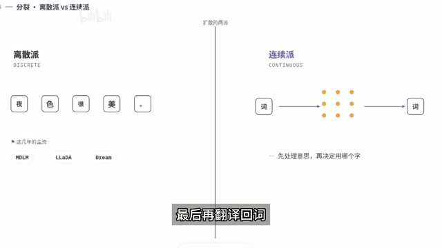
00:01:56–00:02:00 · 画面 04200:02:00–00:02:04 · 画面 043
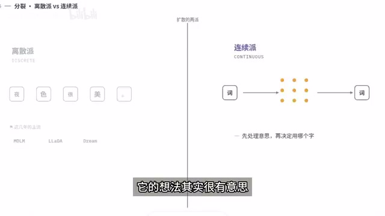
00:02:00–00:02:04 · 画面 04300:02:04–00:02:05 · 画面 044
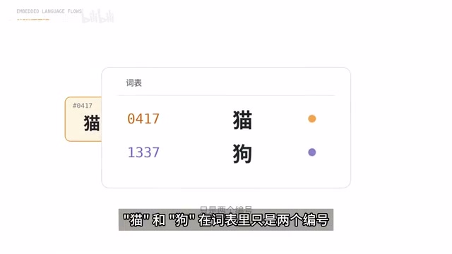
00:02:04–00:02:05 · 画面 04400:02:05–00:02:07 · 画面 045
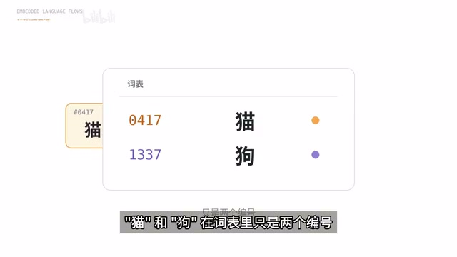
00:02:05–00:02:07 · 画面 045但在向量空间里意思相近的词天然挨在一起从一个意思滑到另一个意思中间是平滑的因此在连续的空间里修改改的是意思而在词表里修改换了只是字
00:02:07–00:02:08 · 画面 046
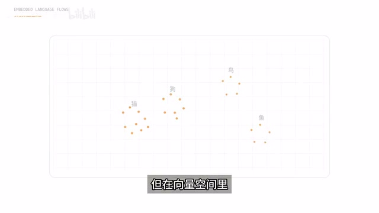
00:02:07–00:02:08 · 画面 04600:02:08–00:02:12 · 画面 047
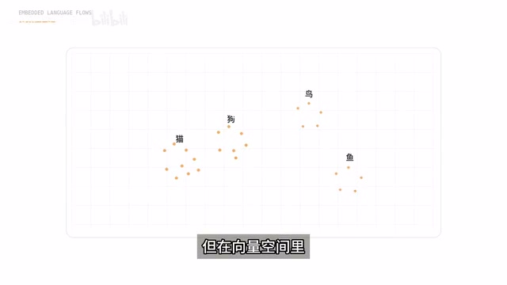
00:02:08–00:02:12 · 画面 04700:02:12–00:02:15 · 画面 048
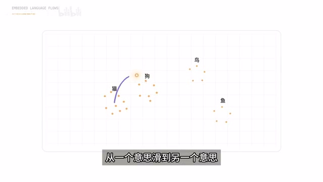
00:02:12–00:02:15 · 画面 04800:02:15–00:02:16 · 画面 049
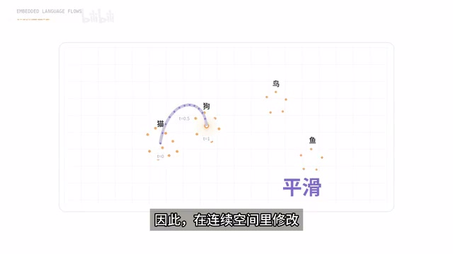
00:02:15–00:02:16 · 画面 04900:02:16–00:02:17 · 画面 050
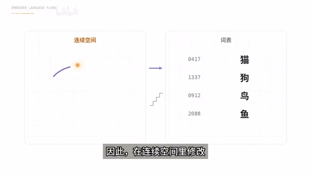
00:02:16–00:02:17 · 画面 05000:02:17–00:02:19 · 画面 051
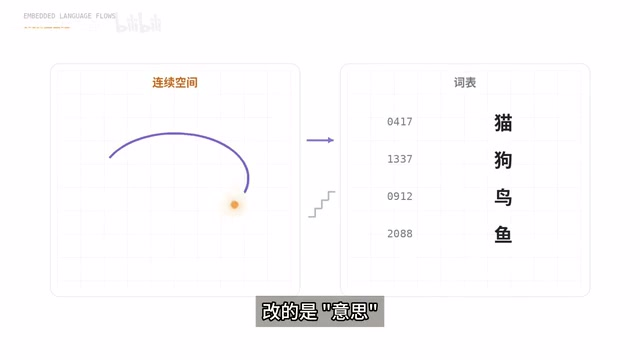
00:02:17–00:02:19 · 画面 05100:02:19–00:02:23 · 画面 052
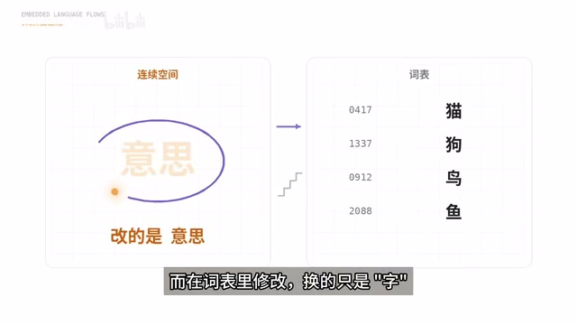
00:02:19–00:02:23 · 画面 052连续派这种先处理意思再决定用哪个字，这个顺序和我们人类组织语言的方式是相似的。但过去两年连续派的成绩一直被离散派压着，所以邪术圈慢慢有一个说法，语言天生是离散的，连续的玩法在文字上行不通。那么事实真的是这样吗？还是说只是做法有问题？我们看看前人具体是怎么做的
00:02:23–00:02:27 · 画面 053
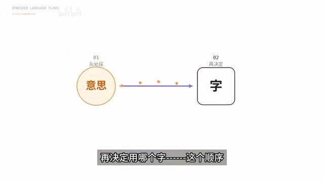
00:02:23–00:02:27 · 画面 05300:02:27–00:02:30 · 画面 054
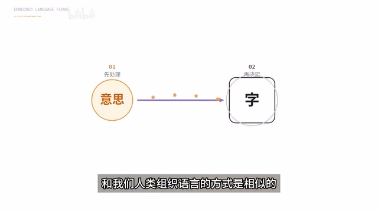
00:02:27–00:02:30 · 画面 05400:02:30–00:02:33 · 画面 055
00:02:30–00:02:33 · 画面 05500:02:33–00:02:36 · 画面 056
00:02:33–00:02:36 · 画面 05600:02:36–00:02:40 · 画面 057
00:02:36–00:02:40 · 画面 05700:02:40–00:02:41 · 画面 058
00:02:40–00:02:41 · 画面 05800:02:41–00:02:42 · 画面 059
00:02:41–00:02:42 · 画面 05900:02:42–00:02:44 · 画面 060
00:02:42–00:02:44 · 画面 06000:02:44–00:02:48 · 画面 061
00:02:44–00:02:48 · 画面 06100:02:48–00:02:50 · 画面 062
00:02:48–00:02:50 · 画面 062先看早年的连续派代表的是 Diffusion LM 它名义上是在连续空间里去噪但每走一步都要把当前的向量投影回词表算一遍交叉熵相当于你改草稿的时候每改一笔都要把全文腾写成正式稿检查一遍导致修改的过程被反复的打断连续空间里根本没有真正用起来更深一层的问题是这等于 B 模型在还没想清楚的时候
00:02:50–00:02:51 · 画面 063
00:02:50–00:02:51 · 画面 06300:02:51–00:02:54 · 画面 064
00:02:51–00:02:54 · 画面 06400:02:54–00:02:57 · 画面 065
00:02:54–00:02:57 · 画面 06500:02:57–00:03:01 · 画面 066
00:02:57–00:03:01 · 画面 06600:03:01–00:03:05 · 画面 067
00:03:01–00:03:05 · 画面 06700:03:05–00:03:09 · 画面 068
00:03:05–00:03:09 · 画面 06800:03:09–00:03:13 · 画面 069
00:03:09–00:03:13 · 画面 06900:03:13–00:03:17 · 画面 070
00:03:13–00:03:17 · 画面 070就先选一个词出来本质还是接近局部的自回归后来的 Latent Diffusion 系列学乖了不再每部投影但代价是要单独训练一个解码器专门负责把向量翻译回文字草稿和正稿之间永远站着一个专职的翻译所以本次何恺明的 ELF 从一开始就立了一条规矩去噪的全程留在连续空间一次都不回头离散化就只做一次那就是最后一步当然说起来简单真做
00:03:17–00:03:21 · 画面 071
00:03:17–00:03:21 · 画面 07100:03:21–00:03:25 · 画面 072
00:03:21–00:03:25 · 画面 07200:03:25–00:03:30 · 画面 073
00:03:25–00:03:30 · 画面 07300:03:30–00:03:34 · 画面 074
00:03:30–00:03:34 · 画面 07400:03:34–00:03:38 · 画面 075
00:03:34–00:03:38 · 画面 07500:03:38–00:03:39 · 画面 076
00:03:38–00:03:39 · 画面 07600:03:39–00:03:42 · 画面 077
00:03:39–00:03:42 · 画面 07700:03:42–00:03:46 · 画面 078
00:03:42–00:03:46 · 画面 078有三个具体的问题要解决，我们一个一个看
00:03:46–00:03:47 · 画面 079
00:03:46–00:03:47 · 画面 07900:03:47–00:03:50 · 画面 080
00:03:47–00:03:50 · 画面 08000:03:50–00:03:52 · 画面 081
00:03:50–00:03:52 · 画面 081第一个问题，向量空间从哪来？所谓的向量空间就是把每个词表示成一串几百维的数字坐标，在这套坐标里意思相近的词位置也相近。自己从零学一个空间效果差还不稳定。ELF 的做法非常务实，直接借用了预训练好的 T5 编码器，本质上就是个 Embedding 模型，词输进去，出来的是带上下文信息的向量。同一个苹果在吃苹果和评论
00:03:52–00:03:56 · 画面 082
00:03:52–00:03:56 · 画面 08200:03:56–00:04:00 · 画面 083
00:03:56–00:04:00 · 画面 08300:04:00–00:04:02 · 画面 084
00:04:00–00:04:02 · 画面 08400:04:02–00:04:06 · 画面 085
00:04:02–00:04:06 · 画面 08500:04:06–00:04:10 · 画面 086
00:04:06–00:04:10 · 画面 08600:04:10–00:04:12 · 画面 087
00:04:10–00:04:12 · 画面 08700:04:12–00:04:14 · 画面 088
00:04:12–00:04:14 · 画面 08800:04:14–00:04:18 · 画面 089
00:04:14–00:04:18 · 画面 08900:04:18–00:04:19 · 画面 090
00:04:18–00:04:19 · 画面 09000:04:19–00:04:23 · 画面 091
00:04:19–00:04:23 · 画面 091通过公司里得到的向量是不一样的，而且这个编码器只在训练阶段使用，生成的时候模型直接从噪声出发，根本不需要它。相当于训练时借来的脚手架，用完就撤
00:04:23–00:04:24 · 画面 092
00:04:23–00:04:24 · 画面 09200:04:24–00:04:28 · 画面 093
00:04:24–00:04:28 · 画面 09300:04:28–00:04:31 · 画面 094
00:04:28–00:04:31 · 画面 09400:04:31–00:04:34 · 画面 095
00:04:31–00:04:34 · 画面 09500:04:34–00:04:38 · 画面 096
00:04:34–00:04:38 · 画面 096第二个问题，在这个空间里怎么从噪声走到数据。ELF 用的是 Flow Matching，思路非常朴素，把从噪声到数据的过程想象成一根进度条，进度 0 是纯噪声，进度 1 是干净的向量，中间的每个状态就是两者按比例的混合。训练的时候随机取一个进度，把噪声和真实向量按比例混在一起，让网络看着这个半成品猜终点长什么样，猜错了就调整参数，猜得多了它就摸
00:04:38–00:04:41 · 画面 097
00:04:38–00:04:41 · 画面 09700:04:41–00:04:45 · 画面 098
00:04:41–00:04:45 · 画面 09800:04:45–00:04:49 · 画面 099
00:04:45–00:04:49 · 画面 09900:04:49–00:04:53 · 画面 100
00:04:49–00:04:53 · 画面 10000:04:53–00:04:56 · 画面 101
00:04:53–00:04:56 · 画面 10100:04:56–00:04:57 · 画面 102
00:04:56–00:04:57 · 画面 10200:04:57–00:04:58 · 画面 103
00:04:57–00:04:58 · 画面 10300:04:58–00:04:59 · 画面 104
00:04:58–00:04:59 · 画面 10400:04:59–00:05:02 · 画面 105
00:04:59–00:05:02 · 画面 10500:05:02–00:05:03 · 画面 106
00:05:02–00:05:03 · 画面 10600:05:03–00:05:07 · 画面 107
00:05:03–00:05:07 · 画面 107从任何一个位置通往终点的路，生成的时候反过来，从纯噪声出发，每到一个位置问一次网络，终点在哪，朝它指向的方向挪一小步，再问再挪，几十步之后就走到了一个有意义的向量所在的位置。这里有一个讲究，网络猜的是终点本身，而不是下一步该往哪走，叫 x-prediction。这个方法是何恺明团队半年前在另外一篇工作《Back to Basics》里提出的，这是顺手用上的，我们当时。
00:05:07–00:05:11 · 画面 108
00:05:07–00:05:11 · 画面 10800:05:11–00:05:15 · 画面 109
00:05:11–00:05:15 · 画面 10900:05:15–00:05:18 · 画面 110
00:05:15–00:05:18 · 画面 11000:05:18–00:05:22 · 画面 111
00:05:18–00:05:22 · 画面 11100:05:22–00:05:24 · 画面 112
00:05:22–00:05:24 · 画面 11200:05:24–00:05:28 · 画面 113
00:05:24–00:05:28 · 画面 11300:05:28–00:05:32 · 画面 114
00:05:28–00:05:32 · 画面 11400:05:32–00:05:36 · 画面 115
00:05:32–00:05:36 · 画面 115当时也讲过，感兴趣的同学欢迎关注后自行观看。这个方法为什么这么重要呢？因为最后一步要从向量恢复出词，预设的同样是干净的成品。只有两个目标对齐了，前后才谈得上共享同一套权重。
00:05:36–00:05:37 · 画面 116
00:05:36–00:05:37 · 画面 11600:05:37–00:05:40 · 画面 117
00:05:37–00:05:40 · 画面 11700:05:40–00:05:44 · 画面 118
00:05:40–00:05:44 · 画面 11800:05:44–00:05:47 · 画面 119
00:05:44–00:05:47 · 画面 11900:05:47–00:05:48 · 画面 120
00:05:47–00:05:48 · 画面 12000:05:48–00:05:50 · 画面 121
00:05:48–00:05:50 · 画面 12100:05:50–00:05:53 · 画面 122
00:05:50–00:05:53 · 画面 122第三个问题来了，前面说过前人要么每步翻译一次，要么单养一个翻译，ELF 的选择是不养翻译，降本增效，让去噪网络自己兼任。具体的做法是同一套参数加一个模式 Token 来切换身份，中间的所有步骤模式是去噪，输入半成品向量，输出预测的干净向量，到了最后一步模式切成解码，输出的向量再经过一层反嵌入矩阵。这个矩阵同学们可以理解成一张从向量
00:05:53–00:05:57 · 画面 123
00:05:53–00:05:57 · 画面 12300:05:57–00:06:00 · 画面 124
00:05:57–00:06:00 · 画面 12400:06:00–00:06:04 · 画面 125
00:06:00–00:06:04 · 画面 12500:06:04–00:06:05 · 画面 126
00:06:04–00:06:05 · 画面 12600:06:05–00:06:09 · 画面 127
00:06:05–00:06:09 · 画面 12700:06:09–00:06:13 · 画面 128
00:06:09–00:06:13 · 画面 12800:06:13–00:06:17 · 画面 129
00:06:13–00:06:17 · 画面 12900:06:17–00:06:21 · 画面 130
00:06:17–00:06:21 · 画面 130反查词的对照表，用于映射回词表里的具体的词。训练的时候这个网络 80%的时间去噪，20%的时间练解码，两类样本混在同一个批次里，几乎不增加成本。一个网络两个角色，专职翻译了这个岗位就这么取消了。至此整个从噪声到最终的词语网络框架我们就完成了 1 到 5
00:06:21–00:06:24 · 画面 131
00:06:21–00:06:24 · 画面 13100:06:24–00:06:28 · 画面 132
00:06:24–00:06:28 · 画面 13200:06:28–00:06:34 · 画面 133
00:06:28–00:06:34 · 画面 13300:06:34–00:06:36 · 画面 134
00:06:34–00:06:36 · 画面 13400:06:36–00:06:39 · 画面 135
00:06:36–00:06:39 · 画面 13500:06:39–00:06:42 · 画面 136
00:06:39–00:06:42 · 画面 136同学们可以给这个框架打几分呢？不过框架打好了只是及格线，真正决定成败的是接下来的三个细节。第一个细节，最后一步不能放水，到了最后关头输入的向量已经约等于答案本身，网络照抄都能混及格，所以训练时要故意在干净的向量上再掺一层扰动，让它在信息不全的情况下练习解码，把从向量到词这门手艺真正学会
00:06:42–00:06:45 · 画面 137
00:06:42–00:06:45 · 画面 13700:06:45–00:06:46 · 画面 138
00:06:45–00:06:46 · 画面 13800:06:46–00:06:50 · 画面 139
00:06:46–00:06:50 · 画面 13900:06:50–00:06:51 · 画面 140
00:06:50–00:06:51 · 画面 14000:06:51–00:06:55 · 画面 141
00:06:51–00:06:55 · 画面 14100:06:55–00:06:56 · 画面 142
00:06:55–00:06:56 · 画面 14200:06:56–00:06:58 · 画面 143
00:06:56–00:06:58 · 画面 14300:06:58–00:06:59 · 画面 144
00:06:58–00:06:59 · 画面 14400:06:59–00:07:00 · 画面 145
00:06:59–00:07:00 · 画面 14500:07:00–00:07:04 · 画面 146
00:07:00–00:07:04 · 画面 14600:07:04–00:07:05 · 画面 147
00:07:04–00:07:05 · 画面 14700:07:05–00:07:06 · 画面 148
00:07:05–00:07:06 · 画面 14800:07:06–00:07:09 · 画面 149
00:07:06–00:07:09 · 画面 14900:07:09–00:07:11 · 画面 150
00:07:09–00:07:11 · 画面 15000:07:11–00:07:12 · 画面 151
00:07:11–00:07:12 · 画面 151每一步去噪网络除了看当前的半成品，还能瞄一眼自己上一步拆的终点，相当于改稿时对照上一版的草稿，而不是每次都推倒重来。训练时设置开启概率为 50%推理时直接沿用上一步的预测，不增加了任何开销。
00:07:12–00:07:15 · 画面 152
00:07:12–00:07:15 · 画面 15200:07:15–00:07:19 · 画面 153
00:07:15–00:07:19 · 画面 15300:07:19–00:07:22 · 画面 154
00:07:19–00:07:22 · 画面 15400:07:22–00:07:24 · 画面 155
00:07:22–00:07:24 · 画面 15500:07:24–00:07:28 · 画面 156
00:07:24–00:07:28 · 画面 15600:07:28–00:07:30 · 画面 157
00:07:28–00:07:30 · 画面 15700:07:30–00:07:31 · 画面 158
00:07:30–00:07:31 · 画面 158第三个细节是连续空间送来的礼物，CFG 引导图像扩散，你最常用的体质量手段，做法是把有条件和无条件的预测各算一遍，然后朝有条件的方向多走一点。这个 CV 圈长了好多年的工具，何恺明几乎原封不动的拿了过来，连训练 CFG 的具体手法都来自自己团队的 MeanFlows。做翻译摘要这类带条件的任务，做法也很一致，把条件句的 Token 项目。
00:07:31–00:07:34 · 画面 159
00:07:31–00:07:34 · 画面 15900:07:34–00:07:36 · 画面 160
00:07:34–00:07:36 · 画面 16000:07:36–00:07:43 · 画面 161
00:07:36–00:07:43 · 画面 16100:07:43–00:07:47 · 画面 162
00:07:43–00:07:47 · 画面 16200:07:47–00:07:48 · 画面 163
00:07:47–00:07:48 · 画面 16300:07:48–00:07:51 · 画面 164
00:07:48–00:07:51 · 画面 16400:07:51–00:07:52 · 画面 165
00:07:51–00:07:52 · 画面 16500:07:52–00:07:53 · 画面 166
00:07:52–00:07:53 · 画面 16600:07:53–00:07:54 · 画面 167
00:07:53–00:07:54 · 画面 16700:07:54–00:07:58 · 画面 168
00:07:54–00:07:58 · 画面 16800:07:58–00:08:02 · 画面 169
00:07:58–00:08:02 · 画面 169量量固定在序列的最前面，不加噪不动它，模型照着往下写，和纹身图一个道理。只是这次条件也是文字。到这里我们的方法细节全部讲完了，是裸指是麻得看最终的实验结果。
00:08:02–00:08:05 · 画面 170
00:08:02–00:08:05 · 画面 17000:08:05–00:08:07 · 画面 171
00:08:05–00:08:07 · 画面 17100:08:07–00:08:09 · 画面 172
00:08:07–00:08:09 · 画面 17200:08:09–00:08:10 · 画面 173
00:08:09–00:08:10 · 画面 17300:08:10–00:08:11 · 画面 174
00:08:10–00:08:11 · 画面 17400:08:11–00:08:15 · 画面 175
00:08:11–00:08:15 · 画面 17500:08:15–00:08:17 · 画面 176
00:08:15–00:08:17 · 画面 176先交代一下评价指标，生成困惑度 PPL，你可以理解为请一个更强的模型给生成的文本打分，分越低越像人画。这个基准里充当裁判的是 GPT-2，在 OpenWebText 上 105N 的参数的 ELFB32 步采样困惑度 24。这是什么水平呢?170N 的离散派主力的 MDLM DUO 要跑到 1024 步才能接近，同时训练 Token 的差距更大。
00:08:17–00:08:21 · 画面 177
00:08:17–00:08:21 · 画面 17700:08:21–00:08:22 · 画面 178
00:08:21–00:08:22 · 画面 17800:08:22–00:08:25 · 画面 179
00:08:22–00:08:25 · 画面 17900:08:25–00:08:29 · 画面 180
00:08:25–00:08:29 · 画面 18000:08:29–00:08:30 · 画面 181
00:08:29–00:08:30 · 画面 18100:08:30–00:08:34 · 画面 182
00:08:30–00:08:34 · 画面 18200:08:34–00:08:37 · 画面 183
00:08:34–00:08:37 · 画面 18300:08:37–00:08:47 · 画面 184
00:08:37–00:08:47 · 画面 184差价普遍 500B 起步，ELF 只用了 45B，十分之一的数据，更好的分数。而且这不是靠蒸馏换来的，别家专门蒸馏过的扫布模型，ELF 不蒸馏就能超过。条件生成上 WMT14 得益因的 BLEU26.4XM 材料 LOOK 三项第一，被超过的名单里既有扩散模型也有自回归模型。论文里举了一个翻译的例子，我印象很深，一句讲 4 亿 3 千万光年外的一圈黑洞的。
00:08:47–00:08:48 · 画面 185
00:08:47–00:08:48 · 画面 18500:08:48–00:08:49 · 画面 186
00:08:48–00:08:49 · 画面 18600:08:49–00:08:58 · 画面 187
00:08:49–00:08:58 · 画面 18700:08:58–00:09:04 · 画面 188
00:08:58–00:09:04 · 画面 18800:09:04–00:09:05 · 画面 189
00:09:04–00:09:05 · 画面 18900:09:05–00:09:06 · 画面 190
00:09:05–00:09:06 · 画面 19000:09:06–00:09:09 · 画面 191
00:09:06–00:09:09 · 画面 19100:09:09–00:09:13 · 画面 192
00:09:09–00:09:13 · 画面 19200:09:13–00:09:17 · 画面 193
00:09:13–00:09:17 · 画面 193ELF 译出来的英文和参考答案几乎一致，不差只在 Lights 页的拼写上出了个小错误。对一个 1 亿参数的模型来说，这个完成度相当可以了。同时模型从 105M 放大到了 652M，效果稳定变好，说明 Scaling 这条路也是通的。另外还有个反直觉的发现，采样时主动注入一点随机性的 SDE 采样器
00:09:17–00:09:18 · 画面 194
00:09:17–00:09:18 · 画面 19400:09:18–00:09:21 · 画面 195
00:09:18–00:09:21 · 画面 19500:09:21–00:09:23 · 画面 196
00:09:21–00:09:23 · 画面 19600:09:23–00:09:28 · 画面 197
00:09:23–00:09:28 · 画面 19700:09:28–00:09:30 · 画面 198
00:09:28–00:09:30 · 画面 19800:09:30–00:09:32 · 画面 199
00:09:30–00:09:32 · 画面 19900:09:32–00:09:33 · 画面 200
00:09:32–00:09:33 · 画面 20000:09:33–00:09:37 · 画面 201
00:09:33–00:09:37 · 画面 20100:09:37–00:09:41 · 画面 202
00:09:37–00:09:41 · 画面 20200:09:41–00:09:44 · 画面 203
00:09:41–00:09:44 · 画面 203在步数少的时候反而比确定性的 ODE 更稳。道理也好理解，每步加一点摇动等于给模型中途几乎错的机会。同时 ELF 的代码已经全部开源了，各位同学可以自行验证。老悲剧先来说说论文里的槽点。
00:09:44–00:09:45 · 画面 204
00:09:44–00:09:45 · 画面 20400:09:45–00:09:48 · 画面 205
00:09:45–00:09:48 · 画面 20500:09:48–00:09:54 · 画面 206
00:09:48–00:09:54 · 画面 20600:09:54–00:09:58 · 画面 207
00:09:54–00:09:58 · 画面 20700:09:58–00:10:00 · 画面 208
00:09:58–00:10:00 · 画面 20800:10:00–00:10:01 · 画面 209
00:10:00–00:10:01 · 画面 20900:10:01–00:10:05 · 画面 210
00:10:01–00:10:05 · 画面 210第一规模，ELF 最大也只有 652M，没有和 GPT 级别的自回归大模型正面交手。裁判本身也只是 GPT-2，它在同体量里可以称王，但离挑战真正的巨头还很远。第二步数，如果不做蒸馏的话，压到 8 步以下质量掉的比较明显，一步生成语言现在还没有做到。第三整套框架站在预训练 T5 的肩膀上，上期 GPT 依赖预训练。
00:10:05–00:10:08 · 画面 211
00:10:05–00:10:08 · 画面 21100:10:08–00:10:11 · 画面 212
00:10:08–00:10:11 · 画面 21200:10:11–00:10:15 · 画面 213
00:10:11–00:10:15 · 画面 21300:10:15–00:10:19 · 画面 214
00:10:15–00:10:19 · 画面 21400:10:19–00:10:23 · 画面 215
00:10:19–00:10:23 · 画面 21500:10:23–00:10:24 · 画面 216
00:10:23–00:10:24 · 画面 21600:10:24–00:10:25 · 画面 217
00:10:24–00:10:25 · 画面 21700:10:25–00:10:28 · 画面 218
00:10:25–00:10:28 · 画面 21800:10:28–00:10:41 · 画面 219
00:10:28–00:10:41 · 画面 219编码器定义距离，这期 ELF 直接借用了别人的向量空间施工，如果哪天要换机模，很多事情都得重新验证。还有一点，何恺明自己提的很坦诚，他们试过把训练数据继续加大，没有看到进一步的提升，也就是说。
00:10:41–00:11:00 · 画面 220
00:10:41–00:11:00 · 画面 220当前的这个规模的瓶颈可能不在数据量上，往哪使劲是接下来要回答的问题。当然这篇论文依然非常具有价值，上一期的 Drifting，何恺明问的是扩散模型去噪为什么不能一步到位，这期 ELF 同一个问题问到了语言上，为什么非要在词的空间里改稿。我们平时想事情的时候，脑子里浮现的往往不是一个一个的字，是一团连续的还不成型的想法。
00:11:00–00:11:02 · 画面 221
00:11:00–00:11:02 · 画面 22100:11:02–00:11:06 · 画面 222
00:11:02–00:11:06 · 画面 22200:11:06–00:11:10 · 画面 223
00:11:06–00:11:10 · 画面 22300:11:10–00:11:14 · 画面 224
00:11:10–00:11:14 · 画面 22400:11:14–00:11:16 · 画面 225
00:11:14–00:11:16 · 画面 22500:11:16–00:11:20 · 画面 226
00:11:16–00:11:20 · 画面 226它变成文字是开口前最后一瞬间才发生的事。先把想法捋清楚再说出来，这是每个写东西的人都明白的常识。ELF 做的事就是把这个常识还给了模型。OK，以上就是本期的全部内容。下期想看哪篇论文，评论区点名，我们下周见。
00:11:20–00:11:21 · 画面 227
00:11:20–00:11:21 · 画面 22700:11:21–00:11:23 · 画面 228
00:11:21–00:11:23 · 画面 22800:11:23–00:11:25 · 画面 229
00:11:23–00:11:25 · 画面 22900:11:25–00:11:26 · 画面 230
00:11:25–00:11:26 · 画面 23000:11:26–00:11:27 · 画面 231
00:11:26–00:11:27 · 画面 23100:11:27–00:11:31 · 画面 232
00:11:27–00:11:31 · 画面 23200:11:31–00:11:35 · 画面 233
00:11:31–00:11:35 · 画面 23300:11:35–00:11:38 · 画面 234
00:11:35–00:11:38 · 画面 23400:11:38–00:11:38 · 画面 235
00:11:38–00:11:38 · 画面 235转写与来源说明 · 0 个自动复核提示
保留 29 个原始语音片段，0 个片段触发自动复核提示。提示仅用于定位可能的术语、重复或识别问题，不等于已确认错误。
讲解画面为源视频截图（640×360），不是可编辑 PPT 文件。全片按每秒 2 帧扫描内容变化，逐步展开页保留；连续动画保留代表画面。清晰度受源视频限制。
原视频：paper/合集_2026-10-16_论文精读/提速32倍！何恺明语言模型处女作！ELF【论文精读】.mp4
SHA-256：6ed7ba2795a98ce87ba549756075d8ba70b98ecea8ffafbdbfa32d434c512ac9
全文按视频语音与画面制作。原论文可从上方链接下载；完整资料包保留全文、原始逐字稿、字幕和校对记录。